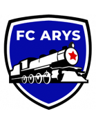
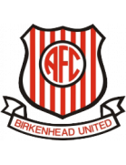
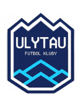
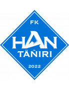

AIGOALIE IS BACK - GLOBAL FOOTBALL UPDATE!
🌍 AIGoalie has expanded its horizon and now predicts football matches globally, including international football!
🕑 From here onwards AIGoalie is also fully automatic, updating and predicting 24/7!
🔍 Make sure to search for your favourite leagues and teams through the search bar!
❗ At this early stage, covering the entire globe may result in some unusual predictions or information → Please report any problems to our contact form!
What is AIGoalie?
🤖 An Artificial Intelligence (AI) model that predicts the winner of football matches.
🏋 Trained on a lot of football data from many seasons and many leagues.
📚 Continues to learn and improve as more matches are played throughout the season.
🔍 Presents you a different perspective: the most confident to the least confident predictions across all the leagues.
🚨 Gives you additional important information, such as important player injuries.
🎯 Is impressively accurate! Check out previous gameweeks to see how AIGoalie performed so far.
Let AIGoalie help you save time, keep you ahead of the game, and assist you in making informed decisions, completely free!
Please report any bugs or feature requests through our contact form!
🏆 EURO 2024 Matches
| Date | Fixture |
Odds |
Win |
Result |
Over ⚽ = over 0.5 ⚽⚽ = over 1.5 ⚽⚽⚽ = over 2.5 ... ► |
Alerts Home 🏥 = Considerable injuries 🏥🏥 = Major injuries 📉 = Dip in form Note, you may see injuries when expanding match but no alert here, meaning the model does not consider them important. |
Alerts Away 🏥 = Considerable injuries 🏥🏥 = Major injuries 📉 = Dip in form Note, you may see injuries when expanding match but no alert here, meaning the model does not consider them important. |
|
|---|---|---|---|---|---|---|---|---|
| Sat. | Türkiye 17:00 Portugal Form: LLDLW Form: LWLWW |
-1.23 vs 1.2 | 1.61 | 72% | None | ⚽⚽ 2.79 |
📉 Home team has a dip in form recently | 📉 Away team has a dip in form recently |
| Tue. | Portugal 2:1 Czech Republic Form: LWLWW Form: WWWWL |
1.18 vs -1.18 | 1.52 | 72% | 1 | ⚽⚽ 2.07 |
📉 Home team has a dip in form recently | 📉 Away team has a dip in form recently |
| Thu. | Denmark 17:00 England Form: LDWWW Form: DLDWL |
-1.16 vs 1.14 | 1.75 | 71% | None | 😴 0.64 |
📉 Away team has a dip in form recently | |
| Sat. | Belgium 20:00 Romania Form: WDDWW Form: WDLDD |
0.78 vs -0.79 | 1.5 | 61% | None | 😴 0.25 |
📉 Away team has a dip in form recently | |
| Wed. | Germany 2:0 Hungary Form: WDWWW Form: WLWLL |
0.75 vs -0.75 | 1.28 | 60% | 1 | ⚽ 1.73 |
📉 Away team has a dip in form recently | |
| Thu. | Spain 20:00 Italy Form: WLDWW Form: DWWDW |
0.53 vs -0.53 | 2.26 | 51% | None | ⚽ 1.64 |
||
| Wed. | Croatia 2:2 Albania Form: WWWLD Form: LWWLD |
0.3 vs -0.33 | 1.47 | 34% | 0.5 | ⚽ 1.5 |
📉 Home team has a dip in form recently | 📉 Away team has a dip in form recently |
| Fri. | Netherlands 20:00 France Form: WWLWW Form: DLWWD |
-0.47 vs 0.26 | 2.32 | 31% | None | ⚽ 1.64 |
📉 Home team has a dip in form recently | |
| Fri. | Slovakia 14:00 Ukraine Form: WLDWW Form: WWDLW |
-0.18 vs 0.18 | 2.18 | 24% | None | ⚽ 1.03 |
📉 Away team has a dip in form recently | |
| Wed. | Scotland 1:1 Switzerland Form: LWDLD Form: WWDWD |
-0.27 vs 0.16 | 1.89 | 23% | 0.5 | ⚽ 1.94 |
📉 Home team has a dip in form recently | 📉 Away team has a dip in form recently |
| Sat. | Georgia 14:00 Czech Republic Form: LWWWL Form: WWWWL |
-0.12 vs 0.12 | 1.79 | 20% | None | ⚽⚽⚽ 3.25 |
📉 Home team has a dip in form recently | 📉 Away team has a dip in form recently |
| Fri. | Poland 17:00 Austria Form: WWWWW Form: WWWWD |
-0.1 vs 0.09 | 2.1 | 17% | None | ⚽ 1.76 |
||
| Tue. | Türkiye 3:1 Georgia Form: LLDLW Form: LWWWL |
0.08 vs -0.11 | n/a | 16% | 1 | ⚽⚽⚽ 3.42 |
📉 Home team has a dip in form recently | 📉 Away team has a dip in form recently |
| Thu. | Slovenia 14:00 Serbia Form: WDWWD Form: DLWLW |
0.04 vs -0.09 | n/a | 13% | None | ⚽ 1.63 |
📉 Away team has a dip in form recently |
🌍 Global Matches
| Date | Fixture |
Odds |
Win |
Result |
Over ⚽ = over 0.5 ⚽⚽ = over 1.5 ⚽⚽⚽ = over 2.5 ... ► |
Alerts Home 🏥 = Considerable injuries 🏥🏥 = Major injuries 📉 = Dip in form Note, you may see injuries when expanding match but no alert here, meaning the model does not consider them important. |
Alerts Away 🏥 = Considerable injuries 🏥🏥 = Major injuries 📉 = Dip in form Note, you may see injuries when expanding match but no alert here, meaning the model does not consider them important. |
|
|---|---|---|---|---|---|---|---|---|
| Wed. | Real Frontera SC 21:00 Deportivo Táchira Form: LWDDD Form: LWLDL |
-23.45 vs 22.82 | n/a | 99% | None | ⚽ 1.3 |
📉 Home team has a dip in form recently | 📉 Away team has a dip in form recently |
| Wed. | Deportivo Miranda FC 21:00 Metropolitanos FC Form: DDDLW Form: LLLLW |
-17.29 vs 16.56 | n/a | 99% | None | ⚽ 1.6 |
📉 Home team has a dip in form recently | 📉 Away team has a dip in form recently |
| Wed. | Dynamo Puerto FC 21:00 Monagas SC Form: DDLWW Form: LDDWW |
-15.63 vs 14.67 | n/a | 99% | None | ⚽⚽⚽ 3.06 |
📉 Home team has a dip in form recently | |
| Wed. | Fundación AIFI 21:00 Angostura FC Form: WDLDL Form: LLDDW |
-12.31 vs 11.51 | n/a | 99% | None | 😴 0.9 |
📉 Home team has a dip in form recently | 📉 Away team has a dip in form recently |
| Fri. | Foshan Nanshi 12:30 Shanghai Shenhua Form: LWDLD Form: WDWWW |
-4.91 vs 4.53 | n/a | 99% | None | ⚽ 1.61 |
📉 Home team has a dip in form recently | |
| Sat. | Chongqing Tonglianglong 12:30 Shandong Taishan Form: WWDWW Form: DWWDW |
-5.11 vs 4.52 | n/a | 99% | None | ⚽⚽ 2.12 |
||
| Sat. | Jiangxi Lushan 11:30 Zhejiang FC Form: LWLLD Form: LWWWL |
-4.81 vs 4.23 | n/a | 99% | None | ⚽⚽⚽ 3.15 |
📉 Home team has a dip in form recently | 📉 Away team has a dip in form recently |
| Sat. | Suzhou Dongwu 12:30 Beijing Guoan Form: DWDDW Form: WWLDW |
-4.16 vs 3.74 | n/a | 97% | None | ⚽⚽ 2.41 |
📉 Home team has a dip in form recently | 📉 Away team has a dip in form recently |
| Tue. | FK Molodechno 0:2 Torpedo-BelAZ Zhodino Form: WWLWW Form: WDWWW |
-4.12 vs 3.56 | n/a | 96% | 1 | 😴 0.9 |
📉 Home team has a dip in form recently | |
| Thu. | San Luis de Quillota 0:2 CD Everton Form: WLLLL Form: WLDWW |
-3.53 vs 2.91 | n/a | 89% | 1 | ⚽⚽ 2.08 |
📉 Home team has a dip in form recently | 🏥 Away team has considerable injuries |
| Tue. | Lokomotiv Gomel 0:5 Isloch Minsk Region Form: DWLDL Form: DWLLW |
-2.76 vs 2.23 | n/a | 82% | 1 | 😴 0.98 |
📉 Home team has a dip in form recently | 📉 Away team has a dip in form recently |
| Sat. | Kaya FC-Iloilo 08:00 Philippine Army FC Form: LWLWW Form: LDLLL |
1.91 vs -2.58 | n/a | 79% | None | ⚽⚽⚽⚽ 4.32 |
📉 Home team has a dip in form recently | 📉 Away team has a dip in form recently |
| Thu. | Kaspiy Aktau 15:00 FK Taraz Form: WWWLD Form: LWLWD |
1.75 vs -2.46 | n/a | 77% | None | ⚽ 1.87 |
📉 Home team has a dip in form recently | 📉 Away team has a dip in form recently |
| Fri. | El Ahly Cairo postponed El Dakhlia SC Form: WWDWW Form: LLDLW |
1.72 vs -2.72 | 1.19 | 77% | None | 😴 0.89 |
📉 Away team has a dip in form recently | |
| Fri. | Yunnan Yukun 12:30 Tianjin Jinmen Tiger Form: WWWDW Form: WDWDL |
-2.11 vs 1.63 | n/a | 76% | None | ⚽⚽ 2.01 |
📉 Away team has a dip in form recently | |
| Thu. | Birmingham Legion FC 01:00 San Antonio FC Form: WLDWL Form: DDLDL |
1.54 vs -2.43 | 2.18 | 75% | None | 😴 0.68 |
📉 Home team has a dip in form recently | 📉 Away team has a dip in form recently |
| Thu. | CA Boca Juniors 2:1 Club Almirante Brown Form: DWDWL Form: DWDWL |
1.49 vs -2.36 | 1.1 | 75% | 1 | ⚽ 1.43 |
📉 Home team has a dip in form recently | 📉 Away team has a dip in form recently |
| Sat. | Lokomotiv Gomel 14:00 ABFF U17 Form: DWLDL Form: LWLLL |
1.46 vs -2.46 | n/a | 75% | None | ⚽ 1.51 |
📉 Home team has a dip in form recently | 📉 Away team has a dip in form recently |
| Sat. | CA Peñarol Unknown Club Deportivo Maldonado Form: WWWWL Form: WLLDL |
1.36 vs -2.41 | n/a | 74% | None | ⚽ 1.51 |
🏥 📉 Home team has considerable injuries and a dip in form recently | 📉 Away team has a dip in form recently |
| Sat. | Qingdao Red Lions 12:30 Shenzhen Peng City Form: DWDDW Form: LLLDL |
-1.66 vs 1.33 | n/a | 73% | None | ⚽ 1.73 |
📉 Home team has a dip in form recently | 📉 Away team has a dip in form recently |
| Wed. | Universidad Central de Venezuela 21:00 Nueva Esparta F.C Form: DDDLW Form: DWDLL |
1.28 vs -2.19 | n/a | 73% | None | 😴 0.33 |
📉 Home team has a dip in form recently | 📉 Away team has a dip in form recently |
| Sat. | United City FC 13:00 Mendiola FC 1991 Form: WWLDW Form: WDLLL |
1.23 vs -2.11 | n/a | 72% | None | ⚽⚽⚽⚽ 4.82 |
📉 Home team has a dip in form recently | 📉 Away team has a dip in form recently |
| Fri. | Guangxi Pingguo Haliao 13:00 Wuhan Three Towns Form: DWLWD Form: WLWLL |
-1.85 vs 1.2 | n/a | 72% | None | ⚽ 1.7 |
📉 Home team has a dip in form recently | 📉 Away team has a dip in form recently |
| Sat. | Türkiye 17:00 Portugal Form: LLDLW Form: LWLWW |
-1.23 vs 1.2 | 1.61 | 72% | None | ⚽⚽ 2.79 |
📉 Home team has a dip in form recently | 📉 Away team has a dip in form recently |
| Tue. | Portugal 2:1 Czech Republic Form: LWLWW Form: WWWWL |
1.18 vs -1.18 | 1.52 | 72% | 1 | ⚽⚽ 2.07 |
📉 Home team has a dip in form recently | 📉 Away team has a dip in form recently |
| Wed. | B36 Tórshavn 3:0 TB Tvøroyri Form: WWDDD Form: DWDWL |
1.16 vs -1.92 | 1.06 | 72% | 1 | ⚽ 1.67 |
📉 Home team has a dip in form recently | 📉 Away team has a dip in form recently |
| Thu. | Denmark 17:00 England Form: LDWWW Form: DLDWL |
-1.16 vs 1.14 | 1.75 | 71% | None | 😴 0.64 |
📉 Away team has a dip in form recently | |
| Tue. | Meizhou Hakka 1:2 Shanghai Port Form: LLDWD Form: WWWWW |
-1.47 vs 1.14 | 1.18 | 71% | 1 | ⚽⚽⚽ 3.24 |
📉 Home team has a dip in form recently | |
| Wed. | Gimpo FC 1:0 Jeonbuk Hyundai Motors Form: WWLWW Form: DLLDL |
-2.0 vs 1.12 | n/a | 71% | 0 | ⚽ 1.04 |
📉 Home team has a dip in form recently | 📉 Away team has a dip in form recently |
| Sat. | Cibao FC 3:2 Atlético Pantoja Form: DDWWD Form: LLLWD |
1.12 vs -1.74 | 1.01 | 71% | 1 | ⚽⚽ 2.08 |
📉 Away team has a dip in form recently | |
| Sat. | Grobinas SC/LFS 12:00 Riga FC Form: WLDLL Form: DWWWW |
-1.53 vs 1.11 | n/a | 71% | None | ⚽⚽ 2.33 |
📉 Home team has a dip in form recently | |
| Thu. | Navbahor Namangan 16:00 FC Qizilqum Form: WWWDD Form: DDLDL |
1.1 vs -1.8 | n/a | 71% | None | ⚽ 1.63 |
📉 Home team has a dip in form recently | 📉 Away team has a dip in form recently |
| Fri. | Wuxi Wugo 12:30 Meizhou Hakka Form: LWDLL Form: LLDWD |
-1.84 vs 1.09 | n/a | 71% | None | ⚽ 1.89 |
📉 Home team has a dip in form recently | 📉 Away team has a dip in form recently |
| Wed. | Portuguesa FC 21:00 Academia Rey Form: LLDDW Form: DWLDL |
1.08 vs -2.08 | 1.01 | 71% | None | ⚽ 1.44 |
📉 Home team has a dip in form recently | 📉 Away team has a dip in form recently |
| Sat. | Club Nacional Unknown Rampla Juniors FC Form: WWLWL Form: LWWLD |
1.05 vs -1.92 | n/a | 71% | None | ⚽⚽ 2.64 |
📉 Home team has a dip in form recently | 📉 Away team has a dip in form recently |
| Thu. | Llaneros FC 4:3 after pensafter pens Orsomarso SC Form: LDDWW Form: DWWWW |
1.03 vs -1.55 | n/a | 70% | 1 | ⚽ 1.08 |
||
| Fri. | Argentina 01:00 Canada Form: LWWWW Form: LWLWL |
1.03 vs -1.86 | 1.31 | 70% | None | ⚽ 1.81 |
📉 Away team has a dip in form recently | |
| Thu. | Okzhetpes Kokshetau 13:00 FK Aktobe II Form: WLWDW Form: LLLLL |
1.0 vs -2.14 | n/a | 70% | None | ⚽ 1.68 |
🏥 Home team has considerable injuries | 📉 Away team has a dip in form recently |
| Sat. | Shijiazhuang Gongfu 12:30 Qingdao West Coast Form: WWWLL Form: DWLDL |
-1.7 vs 0.98 | n/a | 69% | None | ⚽ 1.67 |
📉 Home team has a dip in form recently | 📉 Away team has a dip in form recently |
| Tue. | Ittihad Alexandria SC 0:1 El Ahly Cairo Form: LWDLW Form: WWDWW |
-1.55 vs 0.94 | 1.47 | 67% | 1 | ⚽ 1.15 |
📉 Home team has a dip in form recently | |
| Wed. | Deportivo La Guaira 21:00 Marítimo La Guaira Form: LWWLL Form: DWLDW |
0.93 vs -1.57 | n/a | 67% | None | ⚽ 1.66 |
📉 Home team has a dip in form recently | 📉 Away team has a dip in form recently |
| Thu. | Sepahan FC 15:15 Mes Rafsanjan Form: DWWWW Form: DWWLL |
0.91 vs -1.58 | n/a | 66% | None | ⚽⚽ 2.04 |
📉 Away team has a dip in form recently | |
| Wed. | FC Buxoro 3:0 Aral Nukus Form: WDWDL Form: WDWDW |
0.89 vs -1.47 | n/a | 65% | 1 | ⚽ 1.1 |
📉 Home team has a dip in form recently | |
| Fri. | Sociedade Esportiva Palmeiras postponed Red Bull Bragantino Form: WDDWW Form: WWDWL |
0.88 vs -1.98 | n/a | 65% | None | ⚽ 1.62 |
🏥🏥 Home team has MAJOR injuries | 🏥 📉 Away team has considerable injuries and a dip in form recently |
| Thu. | Thep Xanh Nam Dinh FC 12:00 Hong Linh Ha Tinh FC Form: DLLWD Form: DWLLW |
0.86 vs -1.89 | n/a | 64% | None | ⚽⚽ 2.48 |
📉 Home team has a dip in form recently | 🏥 📉 Away team has considerable injuries and a dip in form recently |
| Sat. | KÍ Klaksvík II 15:00 Víkingur Göta II Form: WDDWL Form: LWWWL |
-1.4 vs 0.86 | n/a | 64% | None | ⚽⚽ 2.76 |
📉 Home team has a dip in form recently | 📉 Away team has a dip in form recently |
| Sat. | CA Progreso 22:00 CA Peñarol Form: LLLLW Form: WWWWL |
-1.63 vs 0.84 | 2.66 | 64% | None | ⚽⚽ 2.05 |
🏥 📉 Home team has considerable injuries and a dip in form recently | 🏥 📉 Away team has considerable injuries and a dip in form recently |
| Sat. | Auckland United FC 04:00 Tauranga City AFC Form: WWDLD Form: DWWWD |
0.84 vs -1.64 | n/a | 64% | None | ⚽⚽⚽ 3.01 |
📉 Home team has a dip in form recently | |
| Wed. | Ulsan HD FC 7:4 after pensafter pens Gyeongnam FC Form: WDWDW Form: WLLDL |
0.83 vs -1.58 | n/a | 63% | 1 | ⚽⚽ 2.22 |
📉 Away team has a dip in form recently | |
| Wed. | Dvo. Rayo Zuliano 21:00 Héroes de Falcón Form: LDLWW Form: DDDLL |
0.79 vs -1.59 | n/a | 62% | None | ⚽ 1.57 |
📉 Home team has a dip in form recently | 📉 Away team has a dip in form recently |
| Fri. | Zamalek SC postponed Pharco FC Form: LWDLW Form: WWDDL |
0.78 vs -1.82 | 1.6 | 61% | None | ⚽⚽ 2.08 |
📉 Home team has a dip in form recently | 📉 Away team has a dip in form recently |
| Wed. | HJK Helsinki 3:1 Kuopion Palloseura Form: WDLWW Form: WWWWL |
0.78 vs -1.33 | 2.4 | 61% | 1 | ⚽⚽ 2.44 |
📉 Home team has a dip in form recently | 📉 Away team has a dip in form recently |
| Sat. | Belgium 20:00 Romania Form: WDDWW Form: WDLDD |
0.78 vs -0.79 | 1.5 | 61% | None | 😴 0.25 |
📉 Away team has a dip in form recently | |
| Wed. | Germany 2:0 Hungary Form: WDWWW Form: WLWLL |
0.75 vs -0.75 | 1.28 | 60% | 1 | ⚽ 1.73 |
📉 Away team has a dip in form recently | |
| Thu. | Keflavík ÍF 20:15 Thróttur Reykjavík Form: LWLWL Form: LDDWL |
0.75 vs -1.65 | n/a | 60% | None | ⚽⚽ 2.52 |
📉 Home team has a dip in form recently | 📉 Away team has a dip in form recently |
| Tue. | Paide Linnameeskond 0:1 Pärnu JK Vaprus Form: LLLLW Form: LDDLL |
0.75 vs -1.53 | 1.32 | 60% | 0 | ⚽ 1.73 |
📉 Home team has a dip in form recently | 📉 Away team has a dip in form recently |
| Thu. | Kairat-Zhas 13:00 Kaysar Zhas Kyzylorda Form: WWLWW Form: DLLWL |
0.74 vs -1.74 | n/a | 60% | None | ⚽⚽ 2.1 |
📉 Home team has a dip in form recently | 📉 Away team has a dip in form recently |
| Wed. | Santos FC 2:0 Goiás EC Form: WLLLL Form: WLWLD |
0.74 vs -1.6 | 1.01 | 60% | 1 | ⚽ 1.8 |
🏥 📉 Home team has considerable injuries and a dip in form recently | 📉 Away team has a dip in form recently |
| Thu. | Valmiera FC 17:00 FK Metta Form: WWWWW Form: LDDLL |
0.71 vs -1.52 | 1.2 | 59% | None | ⚽⚽ 2.04 |
📉 Away team has a dip in form recently | |
| Wed. | FC Nomme United 0:6 FCI Levadia Form: LLDWD Form: DWWWW |
-1.22 vs 0.67 | n/a | 57% | 1 | ⚽⚽ 2.1 |
📉 Home team has a dip in form recently | |
| Sat. | V-Varen Nagasaki 11:00 Fujieda MYFC Form: WWLDW Form: LDWLW |
0.65 vs -1.45 | n/a | 56% | None | ⚽⚽ 2.22 |
📉 Home team has a dip in form recently | 📉 Away team has a dip in form recently |
| Fri. | FK Auda 18:00 FC RFS Form: LDLWW Form: WWWWW |
-0.96 vs 0.64 | n/a | 56% | None | ⚽⚽ 2.07 |
📉 Home team has a dip in form recently | |
| Sat. | Víkingur Reykjavík 20:15 KR Reykjavík Form: LWDLD Form: DWLDW |
0.64 vs -1.27 | 3.4 | 56% | None | ⚽⚽⚽ 3.61 |
📉 Home team has a dip in form recently | 📉 Away team has a dip in form recently |
| Sat. | Yokohama FC 10:00 Roasso Kumamoto Form: LWWWW Form: WLWDL |
0.63 vs -1.24 | 1.54 | 55% | None | ⚽⚽ 2.12 |
📉 Away team has a dip in form recently | |
| Wed. | FC Flora Tallinn 3:1 Jalgpallikool Tammeka Form: WWWWD Form: LDLWL |
0.62 vs -1.56 | n/a | 55% | 1 | ⚽⚽ 2.36 |
📉 Away team has a dip in form recently | |
| Wed. | Breidablik Kópavogur 2:1 KA Akureyri Form: LLLDL Form: WLWLL |
0.59 vs -1.31 | n/a | 54% | 1 | ⚽⚽⚽ 3.33 |
📉 Home team has a dip in form recently | 📉 Away team has a dip in form recently |
| Sat. | FC Seoul 12:00 Suwon FC Form: DDLDW Form: WWLWW |
0.56 vs -1.35 | n/a | 53% | None | ⚽⚽ 2.31 |
📉 Home team has a dip in form recently | 📉 Away team has a dip in form recently |
| Sat. | Western Springs AFC 06:30 Manurewa AFC Form: LWWDL Form: WLWDL |
0.54 vs -1.19 | n/a | 52% | None | ⚽⚽⚽ 3.02 |
📉 Home team has a dip in form recently | 📉 Away team has a dip in form recently |
| Sat. | Energetik-BGU Minsk 14:00 BK Maxline Vitebsk Form: DLWLL Form: WDWLW |
-1.03 vs 0.54 | n/a | 51% | None | ⚽⚽ 2.77 |
📉 Home team has a dip in form recently | 📉 Away team has a dip in form recently |
| Thu. | Spain 20:00 Italy Form: WLDWW Form: DWWDW |
0.53 vs -0.53 | 2.26 | 51% | None | ⚽ 1.64 |
||
| Thu. | CS Sfaxien Unknown Esperance Tunis Form: LDWDL Form: LWDLW |
-0.95 vs 0.52 | n/a | 51% | None | 😴 0.09 |
📉 Home team has a dip in form recently | 📉 Away team has a dip in form recently |
| Wed. | Bucheon FC 1995 2:3 Gwangju FC Form: WDWDL Form: DLWWW |
-1.16 vs 0.52 | 1.7 | 51% | 1 | 😴 0.94 |
📉 Home team has a dip in form recently | |
| Thu. | Cong An Ha Noi FC 13:15 Hai Phong FC Form: WLLLL Form: DDWWL |
0.51 vs -1.39 | n/a | 50% | None | ⚽⚽ 2.13 |
🏥 📉 Home team has considerable injuries and a dip in form recently | 📉 Away team has a dip in form recently |
| Wed. | FC Dziugas Telsiai 0:4 FK Zalgiris Vilnius Form: WDWWW Form: WWLWW |
-0.98 vs 0.5 | n/a | 50% | 1 | ⚽ 1.77 |
📉 Away team has a dip in form recently | |
| Wed. | Turun Palloseura 2:2 Pallokerho-35 Form: LWWWW Form: LLDWW |
0.49 vs -0.9 | n/a | 49% | 0.5 | ⚽⚽ 2.15 |
||
| Fri. | FK Jetisay 13:00  FC Arys Form: DWWLW Form: LDWLL |
0.48 vs -1.17 | n/a | 49% | None | ⚽ 1.65 |
📉 Home team has a dip in form recently | 📉 Away team has a dip in form recently |
| Fri. | CR Flamengo postponed Esporte Clube Bahia Form: WWWWW Form: WWLDW |
0.47 vs -1.64 | 1.69 | 48% | None | ⚽⚽ 2.26 |
🏥🏥 Home team has MAJOR injuries | 📉 Away team has a dip in form recently |
| Sat. | FK Panevezys 17:00 DFK Dainava Alytus Form: WLWDW Form: LWLDD |
0.47 vs -1.39 | 1.1 | 47% | None | 😴 0.51 |
🏥 Home team has considerable injuries | 📉 Away team has a dip in form recently |
| Thu. | UMF Afturelding 19:00 ÍBV Vestmannaeyjar Form: LDWDW Form: LDWWW |
0.46 vs -1.32 | 2.68 | 47% | None | ⚽⚽⚽ 3.38 |
||
| Wed. | FC Seoul 5:4 after pensafter pens Gangwon FC Form: DDLDW Form: WWWWL |
0.45 vs -1.41 | 2.3 | 46% | 1 | ⚽⚽ 2.04 |
📉 Home team has a dip in form recently | 🏥 📉 Away team has considerable injuries and a dip in form recently |
| Sat. | Defensor Sporting Club Unknown Montevideo Wanderers Form: LWWWW Form: LWLWW |
0.44 vs -1.21 | 2.16 | 45% | None | ⚽ 1.74 |
📉 Away team has a dip in form recently | |
| Wed. | Dong A Thanh Hoa FC 1:1 Khanh Hoa FC Form: LLDWD Form: LLLLD |
0.44 vs -1.58 | n/a | 45% | 0.5 | ⚽⚽ 2.22 |
🏥 📉 Home team has considerable injuries and a dip in form recently | 📉 Away team has a dip in form recently |
| Sat. | Montedio Yamagata 09:00 Vegalta Sendai Form: LWDDW Form: WLWDL |
0.44 vs -1.23 | n/a | 45% | None | ⚽ 1.44 |
📉 Home team has a dip in form recently | 📉 Away team has a dip in form recently |
| Sat. | Eastern Suburbs AFC 04:00 Auckland City FC Form: LWDWW Form: DLWWW |
-0.79 vs 0.42 | n/a | 43% | None | ⚽ 1.55 |
||
| Fri. | FK Ekibastuz 13:00 SD Family Astana Form: WDLWL Form: WWLLD |
0.42 vs -1.13 | n/a | 43% | None | ⚽⚽ 2.27 |
📉 Home team has a dip in form recently | 📉 Away team has a dip in form recently |
| Sat. | Samoa 05:00 Papua New Guinea Form: LWWLL Form: LDLLD |
0.41 vs -1.41 | n/a | 43% | None | ⚽⚽⚽⚽ 4.2 |
📉 Home team has a dip in form recently | 📉 Away team has a dip in form recently |
| Tue. | Guarani Futebol Clube (SP) 3:3 Ituano Futebol Clube (SP) Form: DLLLD Form: WLLLD |
0.41 vs -1.4 | n/a | 42% | 0.5 | 😴 0.92 |
📉 Home team has a dip in form recently | 📉 Away team has a dip in form recently |
| Tue. | Kalju FC 2:0 Kalev Tallinn Form: WWDLD Form: WDLLL |
0.4 vs -1.21 | n/a | 42% | 1 | ⚽⚽ 2.73 |
📉 Home team has a dip in form recently | 📉 Away team has a dip in form recently |
| Sat. | Gangwon FC 11:00 Gimcheon Sangmu Form: WWWWL Form: DDWLL |
-1.26 vs 0.4 | n/a | 42% | None | ⚽⚽ 2.0 |
🏥 📉 Home team has considerable injuries and a dip in form recently | 📉 Away team has a dip in form recently |
| Tue. | Fram Reykjavík 1:2 HK Kópavogs Form: DLDWW Form: LWLLW |
0.4 vs -1.2 | n/a | 42% | 0 | ⚽ 1.64 |
📉 Away team has a dip in form recently | |
| Thu. | MerryLand Quy Nhon Binh Dinh FC 12:00 Ha Noi FC Form: DDLWW Form: DWWWW |
-1.04 vs 0.38 | n/a | 41% | None | ⚽⚽ 2.32 |
📉 Home team has a dip in form recently | |
| Wed. | The Cong - Viettel FC 0:0 Ho Chi Minh City FC Form: WWWDD Form: WWWDD |
0.37 vs -1.37 | n/a | 40% | 0.5 | 😴 0.83 |
📉 Home team has a dip in form recently | 📉 Away team has a dip in form recently |
| Sat. | CA Boston River Unknown CA Cerro Form: WWWLD Form: WLWWW |
0.37 vs -1.12 | n/a | 40% | None | ⚽ 1.61 |
📉 Home team has a dip in form recently | |
| Sat. | Suwon Samsung Bluewings 11:30 Seongnam FC Form: LLDDL Form: LLWWW |
0.36 vs -1.26 | 1.68 | 39% | None | ⚽ 1.55 |
🏥 📉 Home team has considerable injuries and a dip in form recently | |
| Thu. | Guayaquil City FC 3:2 Gualaceo SC Form: LDDDD Form: WLWDL |
0.36 vs -1.22 | n/a | 39% | 1 | 😴 0.64 |
📉 Home team has a dip in form recently | 📉 Away team has a dip in form recently |
| Thu. | Mes Rafsanjan 15:15 Sepahan FC Form: DWWLL Form: DWWWW |
-1.02 vs 0.36 | n/a | 39% | None | ⚽⚽ 2.04 |
📉 Home team has a dip in form recently | |
| Wed. | Manta FC 2:1 Cuniburo FC Form: WLDLW Form: WWWWL |
0.35 vs -1.26 | n/a | 38% | 1 | ⚽ 1.22 |
📉 Home team has a dip in form recently | 🏥🏥 📉 Away team has MAJOR injuries and a dip in form recently |
| Thu. | Nasaf Qarshi 16:00 Neftchi Fergana Form: DWDWW Form: DDLWW |
0.35 vs -0.89 | n/a | 38% | None | 😴 0.72 |
📉 Away team has a dip in form recently | |
| Thu. | Becamex Binh Duong FC 12:00 LPBank Hoang Anh Gia Lai FC Form: LWLLL Form: DLWLD |
0.34 vs -1.14 | n/a | 37% | None | ⚽ 1.18 |
📉 Home team has a dip in form recently | 📉 Away team has a dip in form recently |
| Wed. | Papua New Guinea 1:1 Tahiti Form: LDLLD Form: WWWWD |
-0.74 vs 0.34 | n/a | 37% | 0.5 | ⚽⚽⚽⚽ 4.72 |
📉 Home team has a dip in form recently | |
| Tue. | Stjarnan Gardabaer 4:2 FH Hafnarfjördur Form: WWLWL Form: WWDDW |
0.33 vs -0.96 | n/a | 36% | 1 | ⚽⚽ 2.42 |
📉 Home team has a dip in form recently | 🏥 📉 Away team has considerable injuries and a dip in form recently |
| Sat. | Fagiano Okayama 11:00 Thespa Gunma Form: WWLDL Form: LDDDL |
0.33 vs -1.22 | n/a | 36% | None | ⚽ 1.33 |
📉 Home team has a dip in form recently | 📉 Away team has a dip in form recently |
| Sat. | Machida Zelvia 07:00 Avispa Fukuoka Form: WLWDL Form: LLWWW |
0.32 vs -1.01 | n/a | 36% | None | ⚽ 1.9 |
🏥 📉 Home team has considerable injuries and a dip in form recently | |
| Fri. | Club Ferro Carril Oeste 23:00 CA Estudiantes Form: WLLWW Form: DWWLW |
0.32 vs -1.07 | 1.04 | 35% | None | 😴 0.96 |
📉 Home team has a dip in form recently | 📉 Away team has a dip in form recently |
| Wed. | Croatia 2:2 Albania Form: WWWLD Form: LWWLD |
0.3 vs -0.33 | 1.47 | 34% | 0.5 | ⚽ 1.5 |
📉 Home team has a dip in form recently | 📉 Away team has a dip in form recently |
| Tue. | Clube Atlético Mineiro 0:4 Sociedade Esportiva Palmeiras Form: WLLDL Form: WDDWW |
-1.35 vs 0.29 | n/a | 33% | 1 | ⚽ 1.49 |
🏥 📉 Home team has considerable injuries and a dip in form recently | 🏥🏥 Away team has MAJOR injuries |
| Sat. | Urawa Red Diamonds 11:00 Kashima Antlers Form: WDLLD Form: WLWWW |
0.28 vs -1.08 | n/a | 32% | None | ⚽ 1.98 |
📉 Home team has a dip in form recently | |
| Sat. | CA San Miguel 19:00 CA Talleres (Remedios de Escalada) Form: WLWLW Form: DLDLL |
0.28 vs -0.91 | 1.18 | 32% | None | 😴 0.89 |
📉 Home team has a dip in form recently | 📉 Away team has a dip in form recently |
| Tue. | Zed FC 2:2 Pharco FC Form: WWLWD Form: WWDDL |
0.27 vs -1.16 | 2.28 | 32% | 0.5 | ⚽ 1.27 |
📉 Home team has a dip in form recently | 📉 Away team has a dip in form recently |
| Fri. | Netherlands 20:00 France Form: WWLWW Form: DLWWD |
-0.47 vs 0.26 | 2.32 | 31% | None | ⚽ 1.64 |
📉 Home team has a dip in form recently | |
| Thu. | Inter Miami CF 2:1 Columbus Crew Form: WWLDW Form: WWWLW |
0.25 vs -1.34 | n/a | 30% | 1 | ⚽⚽⚽ 3.39 |
🏥🏥 📉 Home team has MAJOR injuries and a dip in form recently | 📉 Away team has a dip in form recently |
| Sat. | Thór Akureyri 17:00 Leiknir Reykjavík Form: WDLDL Form: DLLLW |
0.24 vs -0.74 | n/a | 30% | None | ⚽⚽ 2.17 |
📉 Home team has a dip in form recently | 📉 Away team has a dip in form recently |
| Fri. | FK Gomel 18:00 Shakhter Soligorsk Form: WDDWD Form: LLLDD |
0.24 vs -1.11 | n/a | 29% | None | ⚽⚽ 2.45 |
📉 Home team has a dip in form recently | 📉 Away team has a dip in form recently |
| Wed. | Baladiyat El Mahalla 0:2 Pyramids FC Form: LLLWL Form: LLLLW |
-1.07 vs 0.24 | 1.35 | 29% | 1 | ⚽⚽ 2.98 |
📉 Home team has a dip in form recently | 📉 Away team has a dip in form recently |
| Sat. | Cerro Largo FC Unknown Liverpool FC Montevideo Form: LLLWD Form: WLLLL |
-0.84 vs 0.23 | n/a | 29% | None | ⚽ 1.33 |
📉 Home team has a dip in form recently | 📉 Away team has a dip in form recently |
| Wed. | Incheon United 4:3 after pensafter pens Gimcheon Sangmu Form: DDLDW Form: DDWLL |
-0.99 vs 0.23 | 3.45 | 28% | 0 | ⚽⚽ 2.05 |
📉 Home team has a dip in form recently | 📉 Away team has a dip in form recently |
| Fri. | BFC Daugavpils 16:00 FS Jelgava Form: WLLLL Form: LLWLD |
0.22 vs -0.94 | 1.93 | 27% | None | ⚽ 1.17 |
📉 Home team has a dip in form recently | 📉 Away team has a dip in form recently |
| Sat. | Marconi Stallions FC 10:00 Sutherland Sharks FC Form: LWWDL Form: DLLLL |
0.21 vs -1.21 | n/a | 27% | None | ⚽ 1.78 |
📉 Home team has a dip in form recently | 📉 Away team has a dip in form recently |
| Sat. | Dinamo 2 Minsk 18:00 FK Slonim 2017 Form: WLDWL Form: LLWLD |
0.2 vs -1.08 | n/a | 26% | None | ⚽ 1.15 |
📉 Home team has a dip in form recently | 📉 Away team has a dip in form recently |
| Sat. | St. George City FA 10:15 NWS Spirit Form: WWLLW Form: WLWDD |
0.2 vs -1.03 | n/a | 26% | None | ⚽⚽ 2.44 |
📉 Home team has a dip in form recently | 📉 Away team has a dip in form recently |
| Wed. | Academia Puerto Cabello 21:00 Carabobo FC Form: DDDLD Form: LWLDL |
0.18 vs -1.12 | n/a | 24% | None | 😴 0.84 |
📉 Home team has a dip in form recently | 📉 Away team has a dip in form recently |
| Fri. | Slovakia 14:00 Ukraine Form: WLDWW Form: WWDLW |
-0.18 vs 0.18 | 2.18 | 24% | None | ⚽ 1.03 |
📉 Away team has a dip in form recently | |
| Wed. | Seongnam FC 6:5 after pensafter pens Chungbuk Cheongju FC Form: LLWWW Form: DWLDL |
0.17 vs -0.92 | 2.34 | 24% | 1 | 😴 0.97 |
📉 Away team has a dip in form recently | |
| Sat. | HK Kópavogs 18:00 Stjarnan Gardabaer Form: LWLLW Form: WWLWL |
-0.87 vs 0.17 | n/a | 23% | None | ⚽⚽ 2.03 |
📉 Home team has a dip in form recently | 📉 Away team has a dip in form recently |
| Sat. | FK Minsk 16:00 Arsenal Dzerzhinsk Form: LDLLD Form: LWLWL |
-0.55 vs 0.16 | n/a | 23% | None | ⚽ 1.53 |
📉 Home team has a dip in form recently | 📉 Away team has a dip in form recently |
| Wed. | Scotland 1:1 Switzerland Form: LWDLD Form: WWDWD |
-0.27 vs 0.16 | 1.89 | 23% | 0.5 | ⚽ 1.94 |
📉 Home team has a dip in form recently | 📉 Away team has a dip in form recently |
| Wed. | York United FC 00:00 Pacific FC Form: DWLDW Form: LLDDW |
0.16 vs -0.85 | n/a | 23% | None | ⚽ 1.71 |
📉 Home team has a dip in form recently | 📉 Away team has a dip in form recently |
| Wed. | Surkhon Termiz 2:1 Metallurg Bekabad Form: DLDWD Form: DDDLD |
0.16 vs -0.93 | n/a | 23% | 1 | ⚽ 1.27 |
📉 Home team has a dip in form recently | 📉 Away team has a dip in form recently |
| Tue. | AC Barnechea 1:0 Deportes Limache Form: DWDDW Form: DLDDL |
0.16 vs -0.53 | n/a | 23% | 1 | ⚽ 1.77 |
📉 Home team has a dip in form recently | 📉 Away team has a dip in form recently |
| Thu. | FC Tulsa 2:1 Miami FC Form: LLLLW Form: LLLLL |
0.13 vs -0.82 | n/a | 21% | 1 | ⚽ 1.89 |
📉 Home team has a dip in form recently | 📉 Away team has a dip in form recently |
| Sat. | Hills United 10:00 Wollongong Wolves FC Form: W Form: DDWLW |
0.13 vs -0.7 | n/a | 21% | None | ⚽⚽ 2.42 |
📉 Home team has a dip in form recently | 📉 Away team has a dip in form recently |
| Wed. | Yelimay Semey 2:1 FK Aktobe Form: WLDDW Form: WWWDL |
0.13 vs -0.7 | n/a | 20% | 1 | ⚽ 1.36 |
📉 Home team has a dip in form recently | 📉 Away team has a dip in form recently |
| Sat. | Georgia 14:00 Czech Republic Form: LWWWL Form: WWWWL |
-0.12 vs 0.12 | 1.79 | 20% | None | ⚽⚽⚽ 3.25 |
📉 Home team has a dip in form recently | 📉 Away team has a dip in form recently |
| Wed. | Vaasan Palloseura 1:1 AC Oulu Form: WWDDW Form: LWLDW |
0.12 vs -0.82 | n/a | 20% | 0.5 | ⚽⚽ 2.67 |
📉 Home team has a dip in form recently | 📉 Away team has a dip in form recently |
| Thu. | Pittsburgh Riverhounds SC 0:1 Louisville City FC Form: DLLDL Form: DWWWL |
-0.77 vs 0.12 | 1.04 | 19% | 1 | ⚽ 1.63 |
📉 Home team has a dip in form recently | 📉 Away team has a dip in form recently |
| Thu. | SJK Seinäjoki II 17:00 FC KTP Form: WDDDD Form: WWWWD |
-0.7 vs 0.11 | n/a | 19% | None | ⚽⚽ 2.71 |
📉 Home team has a dip in form recently | |
| Thu. | São Paulo Futebol Clube 0:1 Cuiabá Esporte Clube (MT) Form: WWWDD Form: LDWLW |
0.11 vs -1.03 | n/a | 19% | 0 | ⚽⚽ 2.1 |
🏥🏥 📉 Home team has MAJOR injuries and a dip in form recently | 📉 Away team has a dip in form recently |
| Wed. | Grêmio Novorizontino 1:1 Amazonas FC Form: WDWLD Form: WLWLD |
0.11 vs -0.72 | n/a | 19% | 0.5 | ⚽ 1.09 |
📉 Home team has a dip in form recently | 📉 Away team has a dip in form recently |
| Thu. | Coritiba Foot Ball Club 1:0 América Futebol Clube (MG) Form: WDWLW Form: DWWLW |
0.1 vs -1.12 | n/a | 18% | 1 | ⚽⚽ 2.92 |
🏥 📉 Home team has considerable injuries and a dip in form recently | 📉 Away team has a dip in form recently |
| Wed. | FK TransINVEST 3:0 FK Panevezys Form: LWWLL Form: WLWDW |
-0.82 vs 0.1 | 2.42 | 18% | 0 | ⚽ 1.54 |
📉 Home team has a dip in form recently | 🏥 Away team has considerable injuries |
| Fri. | Poland 17:00 Austria Form: WWWWW Form: WWWWD |
-0.1 vs 0.09 | 2.1 | 17% | None | ⚽ 1.76 |
||
| Sat. | Enppi SC 17:00 El Gouna FC Form: WLWDW Form: WDDWL |
0.09 vs -0.98 | n/a | 17% | None | ⚽ 1.54 |
📉 Away team has a dip in form recently | |
| Sat. | Tala'ea El Gaish 17:00 Smouha SC Form: WWDDL Form: LLDWL |
0.09 vs -1.13 | n/a | 17% | None | 😴 0.75 |
📉 Home team has a dip in form recently | 📉 Away team has a dip in form recently |
| Wed. | Ekenäs IF 1:2 IFK Mariehamn Form: LLWLW Form: DDWLD |
0.09 vs -0.77 | n/a | 17% | 0 | ⚽⚽ 2.03 |
📉 Home team has a dip in form recently | 📉 Away team has a dip in form recently |
| Wed. | FK Suduva Marijampole 2:2 FK Kauno Zalgiris Form: WLLWL Form: LDWWD |
-0.69 vs 0.09 | 2.02 | 17% | 0.5 | ⚽⚽ 2.39 |
📉 Home team has a dip in form recently | |
| Wed. | Ilves Tampere 2:2 SJK Seinäjoki Form: DLDWL Form: WLLWW |
0.09 vs -0.64 | n/a | 17% | 0.5 | ⚽⚽ 2.62 |
📉 Home team has a dip in form recently | 📉 Away team has a dip in form recently |
| Thu. | St. Louis CITY SC 01:30 Colorado Rapids Form: LLDDL Form: LDLLW |
0.09 vs -1.11 | 2.1 | 17% | None | ⚽ 1.73 |
📉 Home team has a dip in form recently | 📉 Away team has a dip in form recently |
| Sat. | UMF Grindavík 17:00 Dalvík/Reynir Form: WWDWD Form: LLLWL |
0.08 vs -0.63 | n/a | 17% | None | ⚽⚽ 2.51 |
📉 Home team has a dip in form recently | 📉 Away team has a dip in form recently |
| Fri. | Vanuatu 05:00 New Zealand Form: DLLLL Form: LLDLL |
0.08 vs -1.08 | n/a | 17% | None | ⚽ 1.44 |
📉 Home team has a dip in form recently | 📉 Away team has a dip in form recently |
| Wed. | Daejeon Hana Citizen 7:8 after pensafter pens Jeju United Form: LLWDL Form: WWLLW |
0.08 vs -1.27 | 2.52 | 17% | 0 | ⚽⚽ 2.23 |
📉 Home team has a dip in form recently | 🏥 📉 Away team has considerable injuries and a dip in form recently |
| Wed. | Pohang Steelers 6:5 after pensafter pens Suwon Samsung Bluewings Form: DWLDW Form: LLDDL |
0.08 vs -0.97 | 1.65 | 17% | 1 | ⚽ 1.72 |
📉 Home team has a dip in form recently | 🏥 📉 Away team has considerable injuries and a dip in form recently |
| Thu. | Los Angeles Galaxy 2:0 New York City FC Form: DDWWL Form: WWWWW |
0.08 vs -0.87 | n/a | 16% | 1 | ⚽ 1.57 |
📉 Home team has a dip in form recently | |
| Sat. | Moca FC 3:2 Atlético Vega Real Form: DDWWW Form: DLDDW |
0.08 vs -0.83 | 1.01 | 16% | 1 | 😴 0.68 |
📉 Away team has a dip in form recently | |
| Tue. | Smouha SC 3:2 El Dakhlia SC Form: LLDWL Form: LLDLW |
0.08 vs -0.96 | 1.64 | 16% | 1 | 😴 0.23 |
📉 Home team has a dip in form recently | 📉 Away team has a dip in form recently |
| Tue. | Türkiye 3:1 Georgia Form: LLDLW Form: LWWWL |
0.08 vs -0.11 | n/a | 16% | 1 | ⚽⚽⚽ 3.42 |
📉 Home team has a dip in form recently | 📉 Away team has a dip in form recently |
| Wed. | Samoa 1:9 Fiji Form: LWWLL Form: WLWWW |
-0.32 vs 0.07 | n/a | 16% | 1 | ⚽⚽⚽⚽⚽ 5.68 |
📉 Home team has a dip in form recently | |
| Fri. | West Coast Rangers 08:30  Birkenhead United Form: WLDWL Form: WWWWD |
-0.4 vs 0.07 | n/a | 15% | None | ⚽⚽⚽ 3.25 |
📉 Home team has a dip in form recently | |
| Sat. | Vestri Ísafjördur 15:00 Valur Reykjavík Form: LLWDL Form: DLLLD |
-0.97 vs 0.07 | n/a | 15% | None | ⚽⚽ 2.73 |
📉 Home team has a dip in form recently | 📉 Away team has a dip in form recently |
| Sat. | Dinamo Samarqand 14:00 FK Andijon Form: DDDWL Form: LDDDL |
0.07 vs -0.71 | n/a | 15% | None | ⚽ 1.42 |
📉 Home team has a dip in form recently | 📉 Away team has a dip in form recently |
| Sat. | BATE Borisov 18:00 Dynamo Brest Form: DWWLW Form: WDWLL |
0.06 vs -0.56 | n/a | 15% | None | ⚽⚽⚽ 3.35 |
📉 Home team has a dip in form recently | 📉 Away team has a dip in form recently |
| Wed. | ÍF Grótta 2:3 UMF Njardvík Form: LWDWD Form: LDWLL |
0.06 vs -0.73 | n/a | 15% | 0 | ⚽ 1.93 |
📉 Home team has a dip in form recently | 📉 Away team has a dip in form recently |
| Sat. | Tochigi SC 11:00 JEF United Chiba Form: LDLDL Form: WLWWW |
-0.73 vs 0.05 | 1.66 | 14% | None | ⚽ 1.99 |
📉 Home team has a dip in form recently | |
| Wed. | FC Lahti 3:3 IF Gnistan Form: DLLLD Form: LDWLL |
0.05 vs -0.7 | n/a | 14% | 0.5 | ⚽⚽ 2.08 |
📉 Home team has a dip in form recently | 📉 Away team has a dip in form recently |
| Sat. | Operário Ferroviário Esporte Clube (PR) 21:00 Botafogo FC Form: DLLLL Form: DLDLW |
0.05 vs -0.81 | n/a | 14% | None | 😴 0.26 |
📉 Home team has a dip in form recently | 📉 Away team has a dip in form recently |
| Wed. | Cleopatra FC 0:1 Modern Future FC Form: LWLWW Form: DLDDL |
0.05 vs -1.07 | n/a | 14% | 0 | ⚽ 1.88 |
📉 Home team has a dip in form recently | 📉 Away team has a dip in form recently |
| Sat. | Ventforet Kofu 10:00 Ehime FC Form: LLLDW Form: LDLWW |
0.05 vs -0.72 | n/a | 14% | None | ⚽⚽ 2.82 |
📉 Home team has a dip in form recently | 📉 Away team has a dip in form recently |
| Sat. | B71 Sandoy 15:00 FC Hoyvík Form: LWLDD Form: LWLLL |
0.05 vs -0.75 | n/a | 14% | None | ⚽⚽ 2.87 |
📉 Home team has a dip in form recently | 📉 Away team has a dip in form recently |
| Sat. | Olympique Beja 16:00 AS Marsa Form: WWLWW Form: LLDWL |
0.05 vs -0.8 | n/a | 14% | None | 😴 0.95 |
📉 Home team has a dip in form recently | 📉 Away team has a dip in form recently |
| Sat. | Renofa Yamaguchi 11:00 Iwaki FC Form: WDWLW Form: LWDLW |
0.04 vs -0.63 | 2.6 | 13% | None | ⚽ 1.5 |
📉 Home team has a dip in form recently | 📉 Away team has a dip in form recently |
| Sat. | FK Ostrovets 15:00 Torpedo-BelAZ 2 Zhodino Form: DLWWD Form: WDLWL |
0.04 vs -0.64 | n/a | 13% | None | ⚽⚽⚽ 3.0 |
📉 Away team has a dip in form recently | |
| Thu. | Slovenia 14:00 Serbia Form: WDWWD Form: DLWLW |
0.04 vs -0.09 | n/a | 13% | None | ⚽ 1.63 |
📉 Away team has a dip in form recently | |
| Wed. | Doma United 0:1 Sunshine Stars Form: DLWLL Form: WDWWW |
0.04 vs -0.98 | n/a | 13% | 0 | 😴 0.58 |
📉 Home team has a dip in form recently | |
| Wed. | Club Africain Tunis 0:0 Etoile Sportive du Sahel Form: LLWLD Form: DLWDL |
0.04 vs -0.69 | 2.0 | 13% | 0.5 | 😴 0.48 |
📉 Home team has a dip in form recently | 📉 Away team has a dip in form recently |
| Wed. | US Monastir 1:1 Stade Tunisien Form: DWWWL Form: WDWDD |
0.03 vs -0.63 | 1.61 | 12% | 0.5 | 😴 0.82 |
📉 Home team has a dip in form recently | 📉 Away team has a dip in form recently |
| Sat. | Melville United 06:00 Hamilton Wanderers Form: LLLWL Form: LLLLL |
0.02 vs -1.02 | n/a | 12% | None | ⚽⚽ 2.65 |
📉 Home team has a dip in form recently | 📉 Away team has a dip in form recently |
| Wed. | Club Leones del Norte 21:00 Chacaritas FC Form: DDDWW Form: WLWDW |
-0.56 vs 0.02 | 3.85 | 11% | None | ⚽ 1.05 |
||
| Fri. | Bunyodkor Tashkent 14:00 FC Olympic Form: LDWLL Form: LWDDW |
0.01 vs -0.7 | n/a | 11% | None | ⚽⚽ 2.57 |
📉 Home team has a dip in form recently | 📉 Away team has a dip in form recently |
| Thu. | D.C. United 0:1 Atlanta United FC Form: LDLDL Form: WLWLD |
-0.93 vs 0.01 | 2.76 | 11% | 1 | ⚽⚽ 2.36 |
📉 Home team has a dip in form recently | 📉 Away team has a dip in form recently |
| Tue. | Valur Reykjavík 2:2 Víkingur Reykjavík Form: DLLLD Form: LWDLD |
0.01 vs -0.54 | n/a | 11% | 0.5 | ⚽⚽⚽⚽ 4.4 |
📉 Home team has a dip in form recently | 📉 Away team has a dip in form recently |
| Tue. | New Zealand 3:0 Solomon Islands Form: LLDLL Form: LWLLL |
-0.41 vs 0.01 | n/a | 10% | 0 | ⚽⚽ 2.65 |
📉 Home team has a dip in form recently | 📉 Away team has a dip in form recently |
| Sat. | Maharlika Taguig FC 10:30 Stallion Laguna FC Form: LLWLD Form: WWLDL |
0.0 vs -0.88 | n/a | 10% | None | ⚽⚽⚽⚽⚽ 5.22 |
📉 Home team has a dip in form recently | 📉 Away team has a dip in form recently |
| Sat. | HB Tórshavn II 17:00 B36 Tórshavn II Form: LLLLW Form: DWDDD |
0.0 vs -0.65 | n/a | 10% | None | ⚽⚽⚽ 3.19 |
📉 Home team has a dip in form recently | 📉 Away team has a dip in form recently |
| Sat. | Miramar Misiones Unknown Danubio FC Form: DLWLW Form: LLDDD |
-0.01 vs -0.62 | n/a | 10% | None | ⚽ 1.01 |
📉 Home team has a dip in form recently | 📉 Away team has a dip in form recently |
| Sat. | Tokyo Verdy 10:00 Nagoya Grampus Form: LLWWW Form: DLDWL |
-0.01 vs -0.9 | n/a | 10% | None | ⚽ 1.68 |
🏥 📉 Away team has considerable injuries and a dip in form recently | |
| Wed. | Yokohama F. Marinos 3:2 Sanfrecce Hiroshima Form: WLWLW Form: WWWWL |
-0.01 vs -0.6 | n/a | 10% | 1 | ⚽⚽ 2.49 |
📉 Home team has a dip in form recently | 📉 Away team has a dip in form recently |
| Sat. | Fiji 08:00 Tahiti Form: WLWWW Form: WWWWD |
-0.01 vs -0.39 | n/a | 10% | None | ⚽ 1.77 |
||
| Wed. | Inter de Barinas 21:00 Estudiantes de Mérida Form: LWWDW Form: LDLLL |
-0.01 vs -0.9 | n/a | 10% | None | 😴 0.95 |
📉 Away team has a dip in form recently | |
| Sat. | Zhetysu Taldykorgan 15:00 Kaysar Kyzylorda Form: LWDWL Form: DDWLW |
-0.02 vs -0.76 | n/a | 10% | None | 😴 0.78 |
📉 Home team has a dip in form recently | 📉 Away team has a dip in form recently |
| Wed. | Salon Palloilijat 1:3 Järvenpään Palloseura Form: LDDDD Form: WWDDL |
-0.03 vs -0.7 | n/a | 9% | 0 | ⚽⚽ 2.45 |
📉 Home team has a dip in form recently | 📉 Away team has a dip in form recently |
| Thu. | FC Dallas 5:3 Minnesota United FC Form: DLLDW Form: DLWDL |
-0.03 vs -0.72 | 1.46 | 9% | 1 | ⚽⚽ 2.4 |
🏥 📉 Home team has considerable injuries and a dip in form recently | 📉 Away team has a dip in form recently |
| Sat. | Lokomotiv Tashkent 16:00 Sogdiana Jizzakh Form: LLLDL Form: WLLWL |
-0.03 vs -0.65 | n/a | 9% | None | ⚽⚽ 2.03 |
📉 Home team has a dip in form recently | 📉 Away team has a dip in form recently |
| Thu. | Botafogo FC 2:0 Associação Atlética Ponte Preta Form: DLDLW Form: LDLWL |
-0.04 vs -0.79 | n/a | 9% | 1 | 😴 0.52 |
📉 Home team has a dip in form recently | 📉 Away team has a dip in form recently |
| Thu. | Independiente Juniors 21:00 AD Nueve de Octubre Form: DWWLW Form: LDDWL |
-0.81 vs -0.04 | 1.26 | 9% | None | ⚽ 1.34 |
📉 Home team has a dip in form recently | 📉 Away team has a dip in form recently |
| Wed. | Marconi Stallions FC postponed Rockdale Ilinden FC Form: LWWDL Form: WDWWD |
-0.05 vs -0.52 | n/a | 9% | None | ⚽⚽⚽ 3.0 |
📉 Home team has a dip in form recently | |
| Wed. | AS Soliman 1:0 AS Marsa Form: WWWDW Form: LLDWL |
-0.06 vs -0.69 | n/a | 9% | 1 | 😴 0.67 |
📉 Away team has a dip in form recently | |
| Wed. | Xorazm Urganch 0:0 Mash'al Mubarek Form: LLLDW Form: LDWLW |
-0.06 vs -0.71 | n/a | 9% | 0.5 | ⚽ 1.46 |
📉 Home team has a dip in form recently | 📉 Away team has a dip in form recently |
| Sat. | Sydney Olympic FC 08:00 APIA Leichhardt FC Form: DWDLL Form: LWLWL |
-0.06 vs -0.51 | n/a | 9% | None | ⚽⚽⚽ 3.62 |
📉 Home team has a dip in form recently | 📉 Away team has a dip in form recently |
| Wed. | Atlético Clube Goianiense 1:2 Criciúma Esporte Clube Form: WWLDW Form: LWWLW |
-0.07 vs -0.89 | n/a | 9% | 0 | ⚽⚽ 2.24 |
🏥 📉 Home team has considerable injuries and a dip in form recently | 📉 Away team has a dip in form recently |
| Tue. | Associação Chapecoense de Futebol 0:1 Operário Ferroviário Esporte Clube (PR) Form: LDDWL Form: DLLLL |
-0.07 vs -0.67 | n/a | 9% | 0 | 😴 0.41 |
📉 Home team has a dip in form recently | 📉 Away team has a dip in form recently |
| Wed. | Paysandu SC 1:1 Clube de Regatas Brasil (AL) Form: WWLWD Form: WLLLW |
-0.07 vs -0.63 | 2.34 | 9% | 0.5 | ⚽ 1.78 |
📉 Home team has a dip in form recently | 📉 Away team has a dip in form recently |
| Sat. | Sogndal IL 16:00 Kongsvinger IL Form: WDLLD Form: WWWWD |
-0.08 vs -0.45 | 2.62 | 8% | None | ⚽⚽⚽ 3.76 |
📉 Home team has a dip in form recently | |
| Sat. | Hartford Athletic 00:30 Tampa Bay Rowdies Form: LLWDL Form: WLWWL |
-0.53 vs -0.09 | 1.07 | 8% | None | ⚽⚽ 2.87 |
📉 Home team has a dip in form recently | 📉 Away team has a dip in form recently |
| Sat. | Qyzyljar Petropavlovsk 13:00 FC Astana Form: LLLDW Form: DLDLL |
-0.1 vs -0.66 | n/a | 8% | None | 😴 0.81 |
📉 Home team has a dip in form recently | 📉 Away team has a dip in form recently |
| Thu. | Charlotte FC 2:2 Orlando City SC Form: DDLWW Form: WLDLL |
-0.4 vs -0.1 | 1.43 | 8% | 0.5 | ⚽ 1.5 |
📉 Home team has a dip in form recently | 📉 Away team has a dip in form recently |
| Sat. | Philippine Air Force FC 08:00 Manila Digger FC Form: WWLLL Form: WLWLL |
-0.11 vs -0.61 | n/a | 8% | None | ⚽⚽ 2.97 |
📉 Home team has a dip in form recently | 📉 Away team has a dip in form recently |
| Fri. | CA Güemes 23:00 Arsenal FC Form: LWDWL Form: LLDLL |
-0.11 vs -1.41 | 1.04 | 8% | None | 😴 0.34 |
📉 Home team has a dip in form recently | 🏥🏥 📉 Away team has MAJOR injuries and a dip in form recently |
| Sat. | FK TransINVEST 15:00 FC Dziugas Telsiai Form: LWWLL Form: WDWWW |
-0.12 vs -0.66 | n/a | 8% | None | ⚽ 1.73 |
📉 Home team has a dip in form recently | |
| Tue. | ÍA Akranes 2:1 KR Reykjavík Form: LWDWL Form: DWLDW |
-0.12 vs -0.6 | 2.52 | 8% | 1 | ⚽⚽⚽ 3.53 |
📉 Home team has a dip in form recently | 🏥 📉 Away team has considerable injuries and a dip in form recently |
| Fri. | Ceará Sporting Club 01:30 Sport Club do Recife Form: DLWWL Form: LWWWL |
-0.13 vs -0.46 | n/a | 7% | None | ⚽ 1.98 |
📉 Home team has a dip in form recently | 📉 Away team has a dip in form recently |
| Sat. | Cuiabá Esporte Clube (MT) postponed Atlético Clube Goianiense Form: LDWLW Form: WWLDW |
-0.14 vs -0.62 | n/a | 7% | None | ⚽⚽ 2.42 |
📉 Home team has a dip in form recently | 🏥 📉 Away team has considerable injuries and a dip in form recently |
| Sat. | FC Suduroy 18:00 NSÍ Runavík II Form: LDWWL Form: DDWDW |
-0.14 vs -0.31 | n/a | 7% | None | ⚽⚽ 2.39 |
📉 Home team has a dip in form recently | |
| Wed. | Käpylän Pallo 0:3 FF Jaro Form: DLLDL Form: WWDLD |
-0.36 vs -0.14 | n/a | 7% | 1 | ⚽⚽ 2.76 |
📉 Home team has a dip in form recently | 📉 Away team has a dip in form recently |
| Wed. | FC Haka 0:0 FC Inter Turku Form: WLWWW Form: LLWWL |
-0.14 vs -0.48 | n/a | 7% | 0.5 | ⚽⚽ 2.36 |
📉 Away team has a dip in form recently | |
| Wed. | FK Atyrau 4:0 Tobol Kostanay Form: DLWWW Form: LWLWL |
-0.14 vs -0.69 | 2.46 | 7% | 1 | 😴 0.67 |
📉 Away team has a dip in form recently | |
| Sat. | Atlántico FC 0:1 Universidad O&M FC Form: WLLWW Form: WDDWW |
-0.15 vs -0.35 | n/a | 7% | 0 | ⚽ 1.19 |
📉 Home team has a dip in form recently | |
| Wed. | Víkingur Gøta 18:30 HB Tórshavn Form: WWLWL Form: WWLWL |
-0.26 vs -0.15 | 1.38 | 7% | None | ⚽⚽ 2.18 |
📉 Home team has a dip in form recently | 📉 Away team has a dip in form recently |
| Sat. | Clube de Regatas Brasil (AL) 21:00 Guarani Futebol Clube (SP) Form: WLLLW Form: DLLLD |
-0.15 vs -0.68 | n/a | 7% | None | ⚽ 1.45 |
📉 Home team has a dip in form recently | 📉 Away team has a dip in form recently |
| Thu. | Oakland Roots SC 2:1 El Paso Locomotive FC Form: LWWLW Form: WLWLW |
-0.53 vs -0.15 | 3.3 | 7% | 0 | ⚽ 1.34 |
📉 Home team has a dip in form recently | 📉 Away team has a dip in form recently |
| Sat. | Sagan Tosu 11:00 Kyoto Sanga Form: WLLLW Form: LLDDW |
-0.16 vs -0.73 | n/a | 7% | None | ⚽ 1.93 |
📉 Home team has a dip in form recently | 📉 Away team has a dip in form recently |
| Sat. | Peru 01:00 Chile Form: LDWWD Form: LDLWL |
-0.17 vs -0.94 | n/a | 7% | None | 😴 0.27 |
🏥 📉 Away team has considerable injuries and a dip in form recently | |
| Thu. | Vila Nova Futebol Clube (GO) 23:00 Mirassol Futebol Clube (SP) Form: LDLDW Form: DWLWW |
-0.17 vs -0.61 | n/a | 7% | None | ⚽ 1.46 |
📉 Home team has a dip in form recently | 📉 Away team has a dip in form recently |
| Sat. | Gamba Osaka 10:30 Vissel Kobe Form: DWWWW Form: LLLDW |
-0.17 vs -0.36 | n/a | 7% | None | ⚽ 1.37 |
📉 Away team has a dip in form recently | |
| Sat. | Santos FC Nazca 19:15 Deportivo Coopsol Form: DDWWL Form: WLLWD |
-0.17 vs -0.54 | n/a | 7% | None | ⚽ 1.06 |
📉 Home team has a dip in form recently | 📉 Away team has a dip in form recently |
| Wed. | Quang Nam FC 4:2 Song Lam Nghe An FC Form: WLLWW Form: WWDLL |
-0.18 vs -0.7 | 2.14 | 6% | 1 | ⚽ 1.65 |
📉 Home team has a dip in form recently | 📉 Away team has a dip in form recently |
| Sat. | CA Fénix Unknown CA River Plate Montevideo Form: WWWLL Form: DLLDL |
-0.19 vs -0.62 | 2.66 | 6% | None | 😴 0.91 |
📉 Home team has a dip in form recently | 📉 Away team has a dip in form recently |
| Sat. | Club Deportivo Maldonado 16:30 CA Fénix Form: WLLDL Form: WWWLL |
-0.19 vs -0.73 | 2.66 | 6% | None | 😴 0.96 |
📉 Home team has a dip in form recently | 📉 Away team has a dip in form recently |
| Tue. | DFK Dainava Alytus 2:2 FA Siauliai Form: LWLDD Form: WLLDD |
-0.68 vs -0.19 | 2.3 | 6% | 0.5 | ⚽ 1.08 |
📉 Home team has a dip in form recently | 📉 Away team has a dip in form recently |
| Fri. | FC OKMK Olmaliq 16:00 Pakhtakor Tashkent Form: LWWLW Form: WDDLW |
-0.19 vs -0.23 | n/a | 6% | None | ⚽⚽⚽ 3.54 |
📉 Home team has a dip in form recently | 📉 Away team has a dip in form recently |
| Sat. | Daegu FC 10:00 Jeonbuk Hyundai Motors Form: WWLLL Form: DLLDL |
-0.69 vs -0.2 | n/a | 6% | None | ⚽ 1.17 |
📉 Home team has a dip in form recently | 📉 Away team has a dip in form recently |
| Sat. | CSD Tristan Suarez 19:00 CA All Boys Form: WDWLL Form: DWLDL |
-0.2 vs -0.84 | 1.12 | 6% | None | 😴 0.78 |
📉 Home team has a dip in form recently | 📉 Away team has a dip in form recently |
| Sat. | CSD Madryn 19:00 AA Estudiantes (Río Cuarto) Form: DWDWW Form: LWDLL |
-0.38 vs -0.21 | 1.15 | 6% | None | 😴 0.2 |
📉 Away team has a dip in form recently | |
| Wed. | Botafogo de Futebol e Regatas 1:1 Club Athletico Paranaense Form: WDWWW Form: WLLWL |
-0.21 vs -1.0 | n/a | 6% | 0.5 | ⚽ 1.9 |
🏥 Home team has considerable injuries | 🏥 📉 Away team has considerable injuries and a dip in form recently |
| Sat. | Daejeon Hana Citizen 11:00 Gwangju FC Form: LLWDL Form: DLWWW |
-0.22 vs -0.54 | n/a | 6% | None | ⚽ 1.64 |
📉 Home team has a dip in form recently | |
| Wed. | Las Vegas Lights FC 3:3 Colorado Springs Switchbacks FC Form: DLDWD Form: WWWDW |
-0.22 vs -0.42 | 2.68 | 6% | 0.5 | ⚽ 1.7 |
📉 Home team has a dip in form recently | |
| Sat. | CA Cerro 14:00 Danubio FC Form: WLWWW Form: LLDDD |
-0.23 vs -0.51 | n/a | 5% | None | ⚽ 1.15 |
📉 Away team has a dip in form recently | |
| Sat. | Cavalry FC 02:00 Atlético Ottawa Form: DWDDW Form: DWWDL |
-0.23 vs -0.45 | 2.0 | 5% | None | ⚽ 1.28 |
📉 Home team has a dip in form recently | 📉 Away team has a dip in form recently |
| Sat. | Chungnam Asan 11:00 Gyeongnam FC Form: WLWLW Form: WLLDL |
-0.24 vs -0.46 | 2.16 | 5% | None | ⚽ 1.57 |
📉 Home team has a dip in form recently | 📉 Away team has a dip in form recently |
| Sat. | Grêmio Foot-Ball Porto Alegrense postponed Sport Club Internacional Form: WWLDW Form: WLLLD |
-0.24 vs -0.94 | n/a | 5% | None | ⚽⚽ 2.59 |
🏥 📉 Home team has considerable injuries and a dip in form recently | 🏥🏥 📉 Away team has MAJOR injuries and a dip in form recently |
| Sat. | East Coast Bays AFC 04:00 Bay Olympic FC Form: LLDWL Form: WLLLW |
-0.55 vs -0.25 | n/a | 5% | None | ⚽ 1.49 |
📉 Home team has a dip in form recently | 📉 Away team has a dip in form recently |
| Fri. | FC Turkistan 14:00 Altay Oskemen Form: LLWLD Form: LLDWW |
-0.61 vs -0.25 | n/a | 5% | None | ⚽ 1.5 |
📉 Home team has a dip in form recently | |
| Thu. | FK Tukums 2000 16:00 FK Liepaja Form: LDLLL Form: DDLWD |
-0.25 vs -0.57 | 3.9 | 5% | None | ⚽⚽ 2.31 |
📉 Home team has a dip in form recently | 📉 Away team has a dip in form recently |
| Sat. | FC Anyang 11:30 Seoul E-Land Form: DWWLW Form: WWLDW |
-0.25 vs -0.53 | 2.32 | 5% | None | ⚽⚽ 2.1 |
📉 Home team has a dip in form recently | 📉 Away team has a dip in form recently |
| Fri. | CA Patronato 23:00 CA Agropecuario Form: DWLDL Form: LLWDW |
-0.39 vs -0.26 | 1.14 | 5% | None | ⚽ 1.28 |
📉 Home team has a dip in form recently | |
| Sat. | Naftan Novopolotsk 14:00 Slavia Mozyr Form: LLWLW Form: LLLDD |
-0.48 vs -0.26 | n/a | 5% | None | ⚽⚽ 2.41 |
📉 Home team has a dip in form recently | 📉 Away team has a dip in form recently |
| Sat. | Shonan Bellmare 11:00 FC Tokyo Form: LWLLW Form: LWLLW |
-0.64 vs -0.26 | 2.74 | 5% | None | ⚽⚽ 2.74 |
🏥 📉 Home team has considerable injuries and a dip in form recently | 📉 Away team has a dip in form recently |
| Thu. | CF Montréal 2:2 New York Red Bulls Form: LDWDD Form: LWWLD |
-0.27 vs -0.56 | 2.56 | 5% | 0.5 | ⚽⚽ 2.22 |
📉 Home team has a dip in form recently | 📉 Away team has a dip in form recently |
| Wed. | JK Trans Narva 0:1 FC Kuressaare Form: LWWWW Form: LLDLD |
-0.27 vs -0.62 | 2.02 | 5% | 0 | ⚽⚽⚽ 3.19 |
📉 Away team has a dip in form recently | |
| Wed. | CSD Vargas Torres 21:00 San Antonio FC Form: WLDLW Form: DDLDL |
-0.27 vs -0.65 | n/a | 5% | None | 😴 0.51 |
📉 Home team has a dip in form recently | 📉 Away team has a dip in form recently |
| Sat. | CA Temperley 19:15 Quilmes AC Form: WWWLL Form: DLWDL |
-0.28 vs -0.33 | 1.04 | 4% | None | ⚽ 1.55 |
📉 Home team has a dip in form recently | 📉 Away team has a dip in form recently |
| Thu. | CD Ñublense postponed Huachipato FC Form: WLLDD Form: DLLWW |
-0.38 vs -0.28 | 3.35 | 4% | None | ⚽ 1.62 |
📉 Home team has a dip in form recently | 📉 Away team has a dip in form recently |
| Thu. | San Jose Earthquakes 1:2 Portland Timbers Form: LLLDL Form: WLWWD |
-0.28 vs -0.62 | 2.12 | 4% | 0 | ⚽⚽ 2.5 |
📉 Home team has a dip in form recently | |
| Sat. | Kashiwa Reysol 11:00 Sanfrecce Hiroshima Form: LLDLW Form: WWWWL |
-0.29 vs -0.36 | n/a | 4% | None | ⚽ 1.68 |
📉 Home team has a dip in form recently | 📉 Away team has a dip in form recently |
| Sat. | Club Almagro 19:00 CA Nueva Chicago Form: LLLDD Form: LWWLW |
-0.29 vs -0.54 | n/a | 4% | None | 😴 0.96 |
📉 Home team has a dip in form recently | 📉 Away team has a dip in form recently |
| Thu. | Houston Dynamo FC 2:2 Seattle Sounders FC Form: DLWDD Form: WWDLW |
-0.29 vs -0.58 | 1.08 | 4% | 0.5 | ⚽ 1.9 |
📉 Home team has a dip in form recently | 🏥 📉 Away team has considerable injuries and a dip in form recently |
| Thu. | ÍR Reykjavík 20:15 Fjölnir Reykjavík Form: WLLWD Form: WDWLD |
-0.38 vs -0.29 | n/a | 4% | None | ⚽⚽ 2.83 |
📉 Home team has a dip in form recently | 📉 Away team has a dip in form recently |
| Sat. | Kagoshima United 11:00 Oita Trinita Form: LDDDL Form: DDLDW |
-0.29 vs -0.59 | 2.5 | 4% | None | ⚽ 1.17 |
📉 Home team has a dip in form recently | 📉 Away team has a dip in form recently |
| Tue. | Fylkir Reykjavík 3:2 Vestri Ísafjördur Form: WWWWL Form: LLWDL |
-0.47 vs -0.29 | n/a | 4% | 0 | ⚽⚽ 2.0 |
📉 Home team has a dip in form recently | 📉 Away team has a dip in form recently |
| Thu. | Brusque Futebol Clube (SC) 0:0 Avaí FC Form: LLDDL Form: WWWWD |
-0.36 vs -0.29 | n/a | 4% | 0.5 | ⚽ 1.55 |
📉 Home team has a dip in form recently | |
| Thu. | Austin FC 1:1 Los Angeles FC Form: WDLLL Form: WWWWW |
-0.44 vs -0.31 | n/a | 4% | 0.5 | ⚽⚽ 2.03 |
📉 Home team has a dip in form recently | |
| Wed. | JIPPO Joensuu 0:0 Mikkelin Palloilijat Form: WWDLL Form: LDLLL |
-0.31 vs -0.34 | n/a | 4% | 0.5 | ⚽⚽ 2.55 |
📉 Home team has a dip in form recently | 📉 Away team has a dip in form recently |
| Sat. | Racing Club de Montevideo 19:00 Defensor Sporting Club Form: WLLDW Form: LWWWW |
-0.43 vs -0.32 | n/a | 4% | None | ⚽ 1.68 |
📉 Home team has a dip in form recently | |
| Sat. | CA Defensores de Belgrano 19:00 Gimnasia y Esgrima de Mendoza Form: WWDLL Form: LLWWW |
-0.33 vs -0.51 | 1.04 | 3% | None | ⚽⚽ 2.1 |
📉 Home team has a dip in form recently | |
| Sat. | Shakhter 2 Soligorsk 16:00 Belshina Bobruisk Form: LWDWW Form: LDWWL |
-0.42 vs -0.33 | n/a | 3% | None | ⚽ 1.88 |
📉 Away team has a dip in form recently | |
| Thu. | FC Cincinnati 4:3 Philadelphia Union Form: WWWLW Form: WDDDL |
-0.33 vs -0.63 | 1.56 | 3% | 1 | ⚽⚽ 2.97 |
🏥 📉 Home team has considerable injuries and a dip in form recently | 📉 Away team has a dip in form recently |
| Sat. | CA Brown (Adrogué) 19:00 CD Morón Form: LLLDL Form: DDLWL |
-0.36 vs -0.33 | n/a | 3% | None | ⚽ 1.28 |
📉 Home team has a dip in form recently | 📉 Away team has a dip in form recently |
| Sat. | Atlético San Cristóbal 1:6 Delfines del Este FC Form: LLLLW Form: LDLWD |
-0.45 vs -0.35 | n/a | 3% | 1 | ⚽⚽ 2.14 |
📉 Home team has a dip in form recently | 📉 Away team has a dip in form recently |
| Fri. | FK Smorgon 16:00 FK Slutsk Form: DWDDD Form: WLLWL |
-0.36 vs -0.49 | n/a | 3% | None | ⚽⚽ 2.25 |
📉 Home team has a dip in form recently | 📉 Away team has a dip in form recently |
| Sat. | Criciúma Esporte Clube postponed Botafogo de Futebol e Regatas Form: LWWLW Form: WDWWW |
-0.61 vs -0.36 | n/a | 3% | None | ⚽ 1.98 |
📉 Home team has a dip in form recently | 🏥 Away team has considerable injuries |
| Fri. | Manly United FC 10:30 Central Coast Mariners II Form: WWWLL Form: LLLLL |
-0.57 vs -0.36 | n/a | 3% | None | ⚽⚽ 2.08 |
📉 Home team has a dip in form recently | 📉 Away team has a dip in form recently |
| Sat. | CA Progreso Unknown Racing Club de Montevideo Form: LLLLW Form: WLLDW |
-0.38 vs -0.36 | n/a | 3% | None | ⚽⚽ 2.34 |
🏥 📉 Home team has considerable injuries and a dip in form recently | 📉 Away team has a dip in form recently |
| Sat. | Júbilo Iwata 10:30 Cerezo Osaka Form: LDWLL Form: DDLDW |
-0.36 vs -0.39 | n/a | 3% | None | ⚽ 1.59 |
📉 Home team has a dip in form recently | 📉 Away team has a dip in form recently |
| Fri. | FK Ulytau  13:00  FC Khan Tengri Form: WWWDW Form: DWDWW |
-0.38 vs -0.42 | n/a | 2% | None | ⚽ 1.36 |
||
| Thu. | Sporting Kansas City 3:4 Real Salt Lake City Form: LLLWL Form: WDDWD |
-0.41 vs -0.49 | n/a | 2% | 0 | ⚽⚽ 2.92 |
📉 Home team has a dip in form recently | 📉 Away team has a dip in form recently |
| Sat. | ADA Jaén 19:15 Pirata FC Form: LLWLL Form: WLLLL |
-0.42 vs -0.49 | n/a | 2% | None | ⚽⚽ 2.13 |
📉 Home team has a dip in form recently | 📉 Away team has a dip in form recently |
| Thu. | Toronto FC 1:2 Nashville SC Form: WLDDL Form: DDWLD |
-0.73 vs -0.46 | 2.36 | 1% | 1 | ⚽⚽ 2.26 |
🏥🏥 📉 Home team has MAJOR injuries and a dip in form recently | 📉 Away team has a dip in form recently |
| Thu. | Esporte Clube Juventude 2:0 Clube de Regatas Vasco da Gama Form: LDDLD Form: WWLLD |
-0.47 vs -0.77 | n/a | 1% | 1 | ⚽ 1.94 |
🏥 📉 Home team has considerable injuries and a dip in form recently | 🏥 📉 Away team has considerable injuries and a dip in form recently |
| Sat. | Albirex Niigata 10:00 Kawasaki Frontale Form: LWWDW Form: LLDWW |
-0.49 vs -0.51 | 2.94 | 0% | None | ⚽⚽ 2.7 |
🏥🏥 Away team has MAJOR injuries | |
| Thu. | Fortaleza Esporte Clube 1:0 Grêmio Foot-Ball Porto Alegrense Form: LWWWL Form: WWLDW |
-0.58 vs -0.58 | n/a | 0% | 1 | ⚽⚽⚽ 3.09 |
🏥 📉 Home team has considerable injuries and a dip in form recently | 🏥 📉 Away team has considerable injuries and a dip in form recently |
| Thu. | Esporte Clube Vitória postponed Clube Atlético Mineiro Form: LLLDD Form: WLLDL |
-0.61 vs -0.66 | n/a | 0% | None | ⚽ 1.46 |
🏥 📉 Home team has considerable injuries and a dip in form recently | 🏥🏥 📉 Away team has MAJOR injuries and a dip in form recently |
| Thu. | Sport Club Internacional 1:0 Sport Club Corinthians Paulista Form: WLLLD Form: WWWLD |
-0.62 vs -0.63 | n/a | 0% | 1 | ⚽⚽ 2.07 |
🏥🏥 📉 Home team has MAJOR injuries and a dip in form recently | 🏥 📉 Away team has considerable injuries and a dip in form recently |
| Thu. | Cruzeiro Esporte Clube 2:0 Fluminense Football Club Form: WLWWL Form: WWWDL |
-0.67 vs -0.81 | n/a | 0% | 1 | ⚽ 1.38 |
🏥 📉 Home team has considerable injuries and a dip in form recently | 🏥🏥 📉 Away team has MAJOR injuries and a dip in form recently |